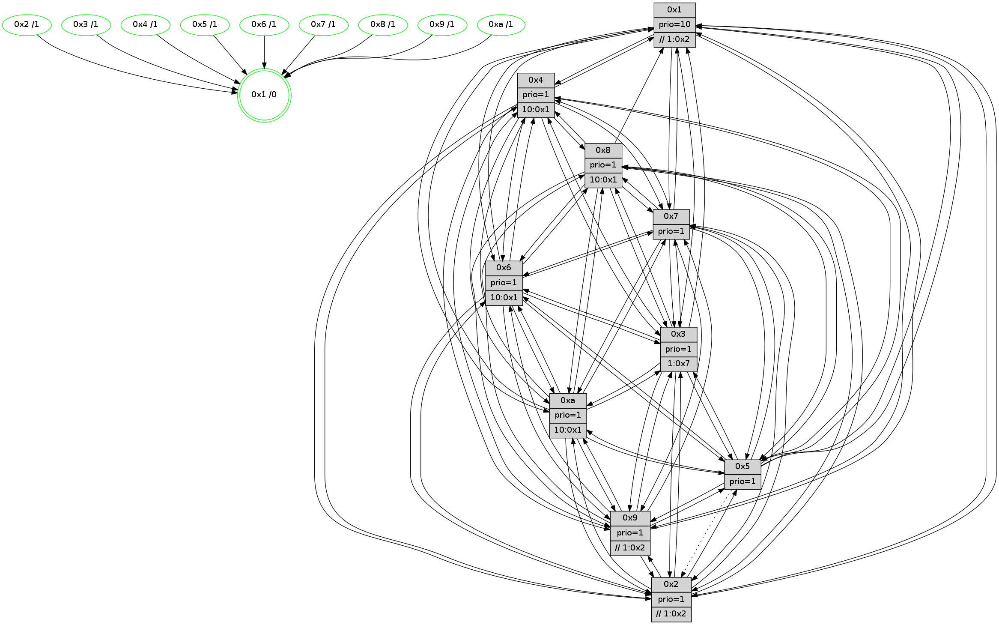

>> << IDX [start] -100 -25 -5 +0 +5 +25 +100 [855.550712109]
 Previous packets
----------------------------------------------------------------------
850.033796 beacon01(faad) #0 coord=01,02,03,04,05,06,07,0a,09,08 cycle=688.0ms assoc
-- color-indic=1 64 d9 39
850.043778 beacon02(faad) #0 coord=01,02,03,04,05,06,07,0a,09,08 cycle=688.0ms assoc 64 4a 08
850.053778 beacon03(faad) #0 coord=01,02,03,04,05,06,07,0a,09,08 cycle=688.0ms assoc 64 30 45
850.063781 beacon04(faad) #0 coord=01,02,03,04,05,06,07,0a,09,08 cycle=688.0ms assoc 64 47 af
850.073778 beacon05(faad) #0 coord=01,02,03,04,05,06,07,0a,09,08 cycle=688.0ms assoc 64 3d e2
850.083780 beacon06(faad) #0 coord=01,02,03,04,05,06,07,0a,09,08 cycle=688.0ms assoc 64 b3 35
850.093780 beacon07(faad) #0 coord=01,02,03,04,05,06,07,0a,09,08 cycle=688.0ms assoc 64 c9 78
850.103784 beacon0a(faad) #0 coord=01,02,03,04,05,06,07,0a,09,08 cycle=688.0ms assoc 64 b8 73
850.123785 beacon08(faad) #0 coord=01,02,03,04,05,06,07,0a,09,08 cycle=688.0ms assoc 64 4c e9
850.135335 [Hello(1): seq=453 sym=4,2,9,5,10,3,8,6,7 sysInfo=coloring-mode-on,ColoringModeRequestCalled stat=4:6,6,5,0/2:1,12,15,9/9:14,0,1,2/5:14,9,8,3/10:12,6,13,9/3:11,4,14,1/8:2,1,14,9/6:9,11,13,8/7:8,4,3,11]
850.138919 [Hello(2): seq=540 sym=4,7,6,3,9,8,10,1 sysInfo=hasWarning stat=4:0,13,13,4/7:13,5,6,8/6:12,7,1,6/3:3,15,14,4/9:7,1,0,1/8:8,2,13,7/10:3,9,15,7/1:6,4,12,1]
850.141223 [Hello(3): seq=544 sym=1,7,6,2,4,8,9,10,5 sysInfo= stat=1:12,4,4,0/7:5,8,13,6/6:5,6,2,0/2:14,8,0,8/4:12,1,8,5/8:3,15,12,5/9:10,11,2,8/10:1,1,0,7/5:5,5,12,9]
850.150898 [Color(5) seq=197 @0:0 prio=1]
850.153297 [Hello(6): seq=544 sym=2,3,5,4,7,9,8,10,1 sysInfo= stat=2:11,15,13,7/3:6,5,6,8/5:3,10,6,11/4:8,12,15,0/7:13,10,1,4/9:5,11,5,1/8:3,3,4,8/10:4,14,10,8/1:1,2,12,1]
850.163420 [Color(4) seq=162 @0:0 prio=1 >10.@1,1.@2,1.@3,1.@6]
----------------------------------------------------------------------
850.821927 beacon01(faad) #0 coord=01,02,03,04,05,06,07,0a,09,08 cycle=688.0ms assoc
-- color-indic=1 64 65 3c
850.831909 beacon02(faad) #0 coord=01,02,03,04,05,06,07,0a,09,08 cycle=688.0ms assoc 64 f6 0d
850.841910 beacon03(faad) #0 coord=01,02,03,04,05,06,07,0a,09,08 cycle=688.0ms assoc 64 8c 40
850.851910 beacon04(faad) #0 coord=01,02,03,04,05,06,07,0a,09,08 cycle=688.0ms assoc 64 fb aa
850.861910 beacon05(faad) #0 coord=01,02,03,04,05,06,07,0a,09,08 cycle=688.0ms assoc 64 81 e7
850.871909 beacon06(faad) #0 coord=01,02,03,04,05,06,07,0a,09,08 cycle=688.0ms assoc 64 0f 30
850.881909 beacon07(faad) #0 coord=01,02,03,04,05,06,07,0a,09,08 cycle=688.0ms assoc 64 75 7d
850.891913 beacon0a(faad) #0 coord=01,02,03,04,05,06,07,0a,09,08 cycle=688.0ms assoc 64 04 76
850.911917 beacon08(faad) #0 coord=01,02,03,04,05,06,07,0a,09,08 cycle=688.0ms assoc 64 f0 ec
850.924733 [Hello(4): seq=544 sym=5,7,6,2,3,9,8,10,1 sysInfo= stat=5:11,15,3,9/7:6,11,4,5/6:14,8,1,8/2:12,0,15,8/3:10,1,0,6/9:2,12,5,4/8:0,6,4,10/10:10,4,8,7/1:15,8,15,1]
850.927462 [Hello(9): seq=488 sym=2,5,3,4,7,6,8,10,1 sysInfo=hasWarning stat=2:12,5,0,0/5:12,2,15,2/3:10,5,15,10/4:1,3,15,6/7:13,1,7,8/6:13,8,5,6/8:12,4,9,1/10:7,11,5,0/1:10,11,0,1]
850.930152 [Hello(8): seq=488 sym=5,2,3,4,7,6,9,10,1 sysInfo=hasWarning stat=5:15,2,6,10/2:12,11,15,2/3:12,11,3,10/4:1,1,0,6/7:2,11,6,10/6:15,13,15,8/9:10,4,3,0/10:9,13,4,0/1:2,2,13,0]
850.933665 [Color(6) seq=187 @0:0 prio=1 >10.@1,1.@2,1.@3,1.@4]
850.935408 [Color(3) seq=185 @0:0 prio=1 >1.@4,1.@6,1.@7]
850.938246 [Color(9) seq=193 @0:0 prio=1 >>1.@2,1.@3,1.@4]
850.940621 [Color(8) seq=200 @0:0 prio=1 >10.@1,1.@2,1.@3,1.@4]
850.943846 [Hello(7): seq=544 sym=2,3,5,6,4,8,9,10,1 sysInfo=hasWarning stat=2:7,11,11,10/3:4,8,7,10/5:13,13,9,14/6:2,5,7,4/4:14,5,3,0/8:8,11,3,1/9:6,5,7,10/10:1,3,9,9/1:11,7,15,0]
850.947497 [Hello(10): seq=477 sym=6,2,3,8,9,5,7,4,1 sysInfo=hasWarning stat=6:9,11,3,3/2:2,13,14,2/3:9,12,14,7/8:4,8,14,9/9:11,2,4,1/5:1,0,5,11/7:1,0,4,5/4:9,5,10,6/1:15,15,1,1]
850.952578 [Color(10) seq=165 @0:0 prio=1 >10.@1,1.@2,1.@3,1.@4]
850.954235 [Color(1) seq=225 @0:0 prio=10 >>1.@2,1.@3,1.@4]
850.957161 [Color(7) seq=150 @0:0 prio=1]
----------------------------------------------------------------------
851.610057 beacon01(faad) #0 coord=01,02,03,04,05,06,07,0a,09,08 cycle=688.0ms assoc
-- color-indic=1 64 a1 32
851.620040 beacon02(faad) #0 coord=01,02,03,04,05,06,07,0a,09,08 cycle=688.0ms assoc 64 32 03
851.630038 beacon03(faad) #0 coord=01,02,03,04,05,06,07,0a,09,08 cycle=688.0ms assoc 64 48 4e
851.640040 beacon04(faad) #0 coord=01,02,03,04,05,06,07,0a,09,08 cycle=688.0ms assoc 64 3f a4
851.650040 beacon05(faad) #0 coord=01,02,03,04,05,06,07,0a,09,08 cycle=688.0ms assoc 64 45 e9
851.660041 beacon06(faad) #0 coord=01,02,03,04,05,06,07,0a,09,08 cycle=688.0ms assoc 64 cb 3e
851.670040 beacon07(faad) #0 coord=01,02,03,04,05,06,07,0a,09,08 cycle=688.0ms assoc 64 b1 73
851.680044 beacon0a(faad) #0 coord=01,02,03,04,05,06,07,0a,09,08 cycle=688.0ms assoc 64 c0 78
851.700046 beacon08(faad) #0 coord=01,02,03,04,05,06,07,0a,09,08 cycle=688.0ms assoc 64 34 e2
851.711274 [Hello(6): seq=545 sym=2,3,5,4,7,9,8,10,1 sysInfo= stat=2:11,15,13,7/3:6,6,6,8/5:3,10,6,11/4:9,13,15,0/7:14,11,1,4/9:5,12,5,1/8:3,4,4,8/10:5,15,10,8/1:1,3,12,1]
851.714928 [Hello(3): seq=545 sym=1,7,6,2,4,8,9,10,5 sysInfo= stat=1:12,5,4,0/7:6,9,13,6/6:6,6,2,0/2:14,9,0,8/4:13,2,8,5/8:3,0,12,5/9:10,12,2,8/10:2,2,0,7/5:5,6,12,9]
851.720967 [Color(4) seq=163 @0:0 prio=1 >10.@1,1.@2,1.@3,1.@7]
851.722896 [Hello(2): seq=541 sym=4,7,6,3,9,8,10,1 sysInfo=hasWarning stat=4:1,14,13,4/7:14,6,6,8/6:13,8,1,6/3:4,0,14,4/9:8,2,0,1/8:9,3,13,7/10:4,10,15,7/1:7,5,12,1]
851.725904 [Color(2) seq=190 @0:0 prio=1 >>1.@2,1.@3,1.@4]
851.730120 [Hello(5): seq=545 sym=7,6,4,3,1,9,8,10,2 sysInfo=hasWarning stat=7:13,7,6,7/6:1,5,4,8/4:9,3,7,5/3:6,9,13,8/1:9,8,15,1/9:4,4,3,1/8:8,0,15,7/10:9,7,12,2/2:11,5,5,0]
851.734849 [Color(5) seq=198 @0:0 prio=1]
----------------------------------------------------------------------
852.398190 beacon01(faad) #0 coord=01,02,03,04,05,06,07,0a,09,08 cycle=688.0ms assoc
-- color-indic=1 64 1d 37
852.408173 beacon02(faad) #0 coord=01,02,03,04,05,06,07,0a,09,08 cycle=688.0ms assoc 64 8e 06
852.418172 beacon03(faad) #0 coord=01,02,03,04,05,06,07,0a,09,08 cycle=688.0ms assoc 64 f4 4b
852.428173 beacon04(faad) #0 coord=01,02,03,04,05,06,07,0a,09,08 cycle=688.0ms assoc 64 83 a1
852.438173 beacon05(faad) #0 coord=01,02,03,04,05,06,07,0a,09,08 cycle=688.0ms assoc 64 f9 ec
852.448173 beacon06(faad) #0 coord=01,02,03,04,05,06,07,0a,09,08 cycle=688.0ms assoc 64 77 3b
852.458174 beacon07(faad) #0 coord=01,02,03,04,05,06,07,0a,09,08 cycle=688.0ms assoc 64 0d 76
852.468180 beacon0a(faad) #0 coord=01,02,03,04,05,06,07,0a,09,08 cycle=688.0ms assoc 64 7c 7d
852.488179 beacon08(faad) #0 coord=01,02,03,04,05,06,07,0a,09,08 cycle=688.0ms assoc 64 88 e7
852.499711 [Hello(4): seq=545 sym=5,7,6,2,3,9,8,10,1 sysInfo= stat=5:12,0,3,9/7:7,12,4,5/6:15,9,1,8/2:13,1,15,8/3:10,2,0,6/9:3,13,5,4/8:1,7,4,10/10:11,5,8,7/1:15,9,15,1]
852.503221 [Hello(8): seq=489 sym=5,2,3,4,7,6,9,10,1 sysInfo=hasWarning stat=5:0,3,6,10/2:13,12,15,2/3:13,11,3,10/4:2,2,0,6/7:3,12,6,10/6:0,13,15,8/9:10,4,3,0/10:10,14,4,0/1:2,3,13,0]
852.506730 [Color(6) seq=188 @0:0 prio=1 >10.@1,1.@2,1.@3,1.@5]
852.508504 [Hello(7): seq=545 sym=2,3,5,6,4,8,9,10,1 sysInfo=hasWarning stat=2:8,12,11,10/3:5,8,7,10/5:14,14,9,14/6:3,5,7,4/4:15,6,3,0/8:8,11,3,1/9:6,5,7,10/10:1,3,9,9/1:11,7,15,0]
852.510979 [Color(8) seq=201 @0:0 prio=1 >10.@1,1.@2,1.@3,1.@5]
852.512792 [Hello(10): seq=478 sym=6,2,3,8,9,5,7,4,1 sysInfo=hasWarning stat=6:10,11,3,3/2:3,14,14,2/3:10,12,14,7/8:4,8,14,9/9:11,2,4,1/5:2,1,5,11/7:1,1,4,5/4:10,6,10,6/1:15,0,1,1]
852.516272 [Color(10) seq=166 @0:0 prio=1 >10.@1,1.@2,1.@3,1.@5]
852.518537 [Color(3) seq=186 @0:0 prio=1 >1.@7]
852.522917 [Color(9) seq=194 @0:0 prio=1 >>1.@2,1.@3,1.@4]
852.529553 [STC(1) #0.101 tree-change,inconsistent-stability,stable,to-color d=0]
852.531830 [Color(1) seq=226 @0:0 prio=10 >>1.@2,1.@3,1.@4]
852.534433 [Color(7) seq=151 @0:0 prio=1]
----------------------------------------------------------------------
853.186321 beacon01(faad) #0 coord=01,02,03,04,05,06,07,0a,09,08 cycle=688.0ms assoc
-- color-indic=1 64 29 2f
853.196303 beacon02(faad) #0 coord=01,02,03,04,05,06,07,0a,09,08 cycle=688.0ms assoc 64 ba 1e
853.206303 beacon03(faad) #0 coord=01,02,03,04,05,06,07,0a,09,08 cycle=688.0ms assoc 64 c0 53
853.216304 beacon04(faad) #0 coord=01,02,03,04,05,06,07,0a,09,08 cycle=688.0ms assoc 64 b7 b9
853.226304 beacon05(faad) #0 coord=01,02,03,04,05,06,07,0a,09,08 cycle=688.0ms assoc 64 cd f4
853.236303 beacon06(faad) #0 coord=01,02,03,04,05,06,07,0a,09,08 cycle=688.0ms assoc 64 43 23
853.246305 beacon07(faad) #0 coord=01,02,03,04,05,06,07,0a,09,08 cycle=688.0ms assoc 64 39 6e
853.256308 beacon0a(faad) #0 coord=01,02,03,04,05,06,07,0a,09,08 cycle=688.0ms assoc 64 48 65
853.276311 beacon08(faad) #0 coord=01,02,03,04,05,06,07,0a,09,08 cycle=688.0ms assoc 64 bc ff
853.290009 [Hello(3): seq=546 sym=1,7,6,2,4,8,9,10,5 sysInfo= stat=1:12,6,5,0/7:6,10,13,6/6:6,6,2,0/2:15,10,0,8/4:14,3,8,5/8:3,0,12,5/9:10,13,2,8/10:2,2,0,7/5:6,7,12,9]
853.292993 [STC(10)->1 #0.101 tree-change,inconsistent-stability,stable,to-color d=1]
853.297027 [STC(4)->1 #0.101 tree-change,inconsistent-stability,stable,to-color d=1]
853.298758 [STC(2)->1 #0.101 tree-change,inconsistent-stability,stable,to-color d=1]
853.300121 [Hello(1): seq=455 sym=4,2,9,5,10,3,8,6,7 sysInfo=coloring-mode-on,ColoringModeRequestCalled stat=4:8,8,5,0/2:3,13,15,9/9:14,0,1,2/5:15,11,8,3/10:12,6,13,9/3:12,4,14,1/8:2,1,14,9/6:10,11,13,8/7:8,6,3,11]
853.303871 [Hello(6): seq=546 sym=2,3,5,4,7,9,8,10,1 sysInfo= stat=2:12,0,13,7/3:7,7,6,8/5:4,11,6,11/4:10,14,15,0/7:15,12,1,4/9:5,13,5,1/8:3,5,4,8/10:6,0,10,8/1:1,4,13,1]
853.306313 [Color(4) seq=164 @0:0 prio=1 >10.@1,1.@2,1.@3,1.@7]
853.308183 [STC(6)->1 #0.101 tree-change,inconsistent-stability,stable,to-color d=1]
853.309750 [Color(2) seq=191 @0:0 prio=1 >>1.@2,1.@3,1.@5]
853.316074 [STC(3)->1 #0.101 tree-change,inconsistent-stability,stable,to-color d=1]
853.317470 [STC(5)->1 #0.101 tree-change,inconsistent-stability,stable,to-color d=1]
853.319132 [Color(5) seq=199 @0:0 prio=1]
----------------------------------------------------------------------
853.974450 beacon01(faad) #0 coord=01,02,03,04,05,06,07,0a,09,08 cycle=688.0ms assoc
-- color-indic=1 64 95 2a
853.984434 beacon02(faad) #0 coord=01,02,03,04,05,06,07,0a,09,08 cycle=688.0ms assoc 64 06 1b
853.994433 beacon03(faad) #0 coord=01,02,03,04,05,06,07,0a,09,08 cycle=688.0ms assoc 64 7c 56
854.004432 beacon04(faad) #0 coord=01,02,03,04,05,06,07,0a,09,08 cycle=688.0ms assoc 64 0b bc
854.014433 beacon05(faad) #0 coord=01,02,03,04,05,06,07,0a,09,08 cycle=688.0ms assoc 64 71 f1
854.024433 beacon06(faad) #0 coord=01,02,03,04,05,06,07,0a,09,08 cycle=688.0ms assoc 64 ff 26
854.034434 beacon07(faad) #0 coord=01,02,03,04,05,06,07,0a,09,08 cycle=688.0ms assoc 64 85 6b
854.044437 beacon0a(faad) #0 coord=01,02,03,04,05,06,07,0a,09,08 cycle=688.0ms assoc 64 f4 60
854.064440 beacon08(faad) #0 coord=01,02,03,04,05,06,07,0a,09,08 cycle=688.0ms assoc 64 00 fa
854.077903 [Hello(4): seq=546 sym=5,7,6,2,3,9,8,10,1 sysInfo= stat=5:12,1,4,9/7:8,13,4,5/6:15,10,2,8/2:13,2,15,8/3:11,2,1,6/9:4,14,6,4/8:2,8,4,10/10:12,6,8,7/1:15,10,0,1]
854.080637 [Hello(10): seq=479 sym=6,2,3,8,9,5,7,4,1 sysInfo=hasWarning stat=6:11,11,4,3/2:4,15,15,2/3:10,13,15,7/8:4,8,14,9/9:11,3,4,1/5:2,2,6,11/7:1,2,4,5/4:11,6,11,6/1:0,1,2,1]
854.083313 [Hello(7): seq=546 sym=2,3,5,6,4,8,9,10,1 sysInfo=hasWarning stat=2:8,13,12,10/3:6,8,8,10/5:14,15,10,14/6:4,5,8,4/4:0,6,4,0/8:8,11,4,1/9:6,5,7,10/10:1,3,10,9/1:12,7,15,0]
854.088573 [Color(1) seq=227 @0:0 prio=10 >>1.@2,1.@3,1.@4]
854.090949 [Color(8) seq=202 @0:0 prio=1 >10.@1,1.@2,1.@3,1.@5]
854.093144 [Color(10) seq=167 @0:0 prio=1 >10.@1,1.@2,1.@3,1.@5]
854.095382 [Color(9) seq=195 @0:0 prio=1 >>1.@2,1.@3,1.@4]
854.097270 [Color(7) seq=152 @0:0 prio=1]
854.101193 [Color(3) seq=187 @0:0 prio=1 >1.@7]
854.108037 [Color(6) seq=189 @0:0 prio=1 >10.@1,1.@2,1.@3,1.@5]
----------------------------------------------------------------------
854.762581 beacon01(faad) #0 coord=01,02,03,04,05,06,07,0a,09,08 cycle=688.0ms assoc
-- color-indic=1 64 51 24
854.772564 beacon02(faad) #0 coord=01,02,03,04,05,06,07,0a,09,08 cycle=688.0ms assoc 64 c2 15
854.782563 beacon03(faad) #0 coord=01,02,03,04,05,06,07,0a,09,08 cycle=688.0ms assoc 64 b8 58
854.792564 beacon04(faad) #0 coord=01,02,03,04,05,06,07,0a,09,08 cycle=688.0ms assoc 64 cf b2
854.802564 beacon05(faad) #0 coord=01,02,03,04,05,06,07,0a,09,08 cycle=688.0ms assoc 64 b5 ff
854.812564 beacon06(faad) #0 coord=01,02,03,04,05,06,07,0a,09,08 cycle=688.0ms assoc 64 3b 28
854.822564 beacon07(faad) #0 coord=01,02,03,04,05,06,07,0a,09,08 cycle=688.0ms assoc 64 41 65
854.832569 beacon0a(faad) #0 coord=01,02,03,04,05,06,07,0a,09,08 cycle=688.0ms assoc 64 30 6e
854.852569 beacon08(faad) #0 coord=01,02,03,04,05,06,07,0a,09,08 cycle=688.0ms assoc 64 c4 f4
854.864419 [Hello(3): seq=547 sym=1,7,6,2,4,8,9,10,5 sysInfo= stat=1:12,6,5,0/7:6,10,13,6/6:6,7,2,0/2:15,10,0,8/4:15,3,8,5/8:3,0,12,5/9:10,13,2,8/10:2,2,0,7/5:6,8,13,9]
854.867531 [Hello(1): seq=456 sym=4,2,9,5,10,3,6,7 sysInfo=coloring-mode-on,ColoringModeRequestCalled stat=4:9,8,5,0/2:3,14,15,9/9:14,1,1,2/5:15,12,9,3/10:12,7,13,9/3:12,5,15,1/6:11,12,14,8/7:8,7,3,11]
854.870208 [Hello(2): seq=543 sym=4,5,7,6,3,9,8,10,1 sysInfo=hasWarning stat=4:3,14,13,4/5:0,2,1,0/7:0,8,6,8/6:14,10,1,6/3:5,1,15,4/9:9,4,1,1/8:10,5,13,7/10:6,12,15,7/1:7,7,13,1]
854.873986 [Color(2) seq=192 @0:0 prio=1 >>1.@2,1.@3,1.@5]
854.877606 [Hello(6): seq=547 sym=2,3,5,4,7,9,8,10,1 sysInfo= stat=2:12,1,13,7/3:7,7,7,8/5:4,12,7,11/4:11,15,15,0/7:15,12,1,4/9:5,13,5,1/8:3,5,4,8/10:6,0,10,8/1:1,4,13,1]
854.881110 [Hello(5): seq=547 sym=7,6,4,3,1,9,8,10 asym=2 sysInfo=hasWarning stat=7:15,9,6,7/6:2,7,4,8/4:11,3,7,5/3:7,10,13,8/1:9,10,0,1/9:6,6,4,1/8:9,2,15,7/10:11,9,12,2/2:11,5,5,0]
854.883729 [Color(4) seq=165 @0:0 prio=1 >10.@1,1.@2,1.@3,1.@7]
854.885614 [Color(5) seq=200 @0:0 prio=1]